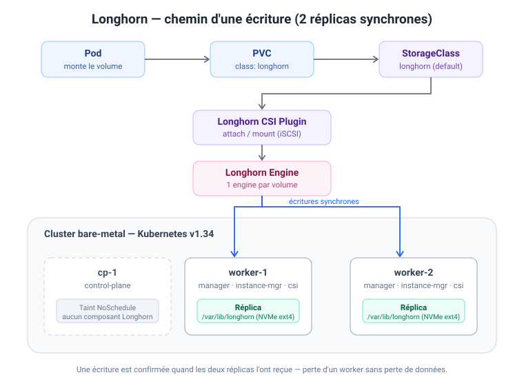

Longhorn — Stockage répliqué du cluster bare-metal¶
Résumé
Longhorn 1.12.0 installé via Helm le 18/07/2026 sur le cluster bare-metal
(cp-1 / worker-1 / worker-2, Kubernetes v1.34.3).
StorageClass longhorn par défaut, 2 réplicas par volume, données sur les workers uniquement.
Architecture¶

- Un PVC sans
storageClassNametombe sur la StorageClasslonghorn(classe par défaut). - Chaque volume est répliqué en 2 copies synchrones, une sur
worker-1, une surworker-2. cp-1(control-plane, taintNoSchedule) n'héberge ni réplica ni composant Longhorn — seuls les workers font tournerlonghorn-manager,instance-manager,engine-imageetlonghorn-csi-plugin(2 exemplaires de chaque).- Données hôte :
/var/lib/longhornsur le NVMe de chaque worker (ext4, ~440 Go libres/nœud).
Pourquoi 2 réplicas et pas 3 : avec le taint sur cp-1, seuls 2 nœuds peuvent stocker.
Un defaultReplicaCount: 3 laisserait les volumes en état dégradé permanent.
Prérequis appliqués (workers uniquement pour les modules, les 3 nœuds pour le reste)¶
Sur chaque nœud :
sudo apt-get install -y open-iscsi nfs-common
sudo systemctl enable --now iscsid
Sur worker-1 et worker-2 :
# Modules noyau requis (RWX + volumes chiffrés)
sudo modprobe nfs && sudo modprobe dm_crypt
cat <<'EOF' | sudo tee /etc/modules-load.d/longhorn.conf
nfs
dm_crypt
EOF
# multipathd désactivé : il capture les devices Longhorn (piège bare-metal classique)
sudo systemctl disable --now multipathd multipathd.socket
Vérification préalable — longhornctl (pas environment_check.sh)¶
Piège rencontré
Le script environment_check.sh documenté un peu partout est déprécié et retiré
des versions récentes → 404 sur les URL v1.12.x. Utiliser la CLI longhornctl.
Depuis le poste d'admin (macOS Apple Silicon) :
curl -sSfL -o longhornctl \
https://github.com/longhorn/cli/releases/download/v1.12.0/longhornctl-darwin-arm64
chmod +x longhornctl && sudo mv longhornctl /usr/local/bin/
Deux subtilités rencontrées :
longhornctlne lit pas~/.kube/configpar défaut → exporterKUBECONFIG(pérennisé dans~/.zshrc:export KUBECONFIG=$HOME/.kube/config).- Le preflight déploie ses pods dans
longhorn-system→ créer le namespace avant :
kubectl create namespace longhorn-system
longhornctl check preflight
Résultat attendu : uniquement des info sur worker-1 et worker-2.
cp-1 n'apparaît pas dans le rapport (taint control-plane) — c'est normal.
Installation Helm¶
longhorn-values.yaml :
defaultSettings:
defaultReplicaCount: 2
storageMinimalAvailablePercentage: 15
defaultDataPath: /var/lib/longhorn
persistence:
defaultClass: true # StorageClass "longhorn" devient la classe par défaut
defaultClassReplicaCount: 2
helm repo add longhorn https://charts.longhorn.io
helm repo update
helm install longhorn longhorn/longhorn \
--namespace longhorn-system \
--version 1.12.0 \
-f longhorn-values.yaml
Notes post-install :
- Un restart unique de
longhorn-managerau premier démarrage est normal (initialisation CRDs/webhook). - Vérifier
kubectl get storageclass:longhorndoit être marquée(default)et être la seule classe par défaut.
Validation¶
kubectl apply -f - <<'EOF'
apiVersion: v1
kind: PersistentVolumeClaim
metadata:
name: test-longhorn
spec:
accessModes: ["ReadWriteOnce"]
storageClassName: longhorn
resources:
requests:
storage: 1Gi
EOF
kubectl get pvc test-longhorn # -> Bound
kubectl delete pvc test-longhorn
Accès à l'UI¶
Port-forward uniquement pour l'instant (l'UI n'a aucune auth intégrée) :
kubectl -n longhorn-system port-forward svc/longhorn-frontend 8080:80
# -> http://localhost:8080
Reste à faire¶
- [ ] Backup target (S3 ou NFS) — prioritaire avant de mettre de vraies données : les réplicas protègent d'une panne de nœud, pas d'une suppression accidentelle.
- [ ] Exposer l'UI via NGINX Gateway Fabric (HTTPRoute) avec auth en amont.
- [ ]
ServiceMonitorPrometheus + dashboard Grafana (métriques Longhorn natives). - [ ] Éventuelle StorageClass
longhorn-single(numberOfReplicas: "1") pour données jetables.
Références¶
- Chart :
longhorn/longhorn1.12.0 — https://charts.longhorn.io - CLI : https://github.com/longhorn/cli
- Multipath : https://longhorn.io/kb/troubleshooting-volume-with-multipath/